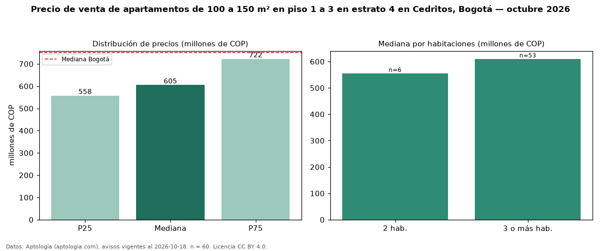

Precio de venta de apartamentos de 100 a 150 m² en piso 1 a 3 en estrato 4 en Cedritos, Bogotá — octubre 2026
Con 60 avisos vigentes, el precio mediano de apartamentos de 100 a 150 m² en piso 1 a 3 en estrato 4 en venta en Cedritos (localidad de Usaquén), Bogotá es COP 605 millones. Eso es 13 % menos que la mediana de los apartamentos de 100 a 150 m² en estrato 4 en venta de Cedritos (COP 695 millones, n = 200); este segmento reúne el 30 % de esos avisos. Por metro cuadrado, la mediana es COP 5,49 millones/m² (n = 60), 9 % por debajo de los apartamentos de 100 a 150 m² en estrato 4 en venta de Cedritos (COP 6,00 millones/m²). El área mediana anunciada es 112 m². El segmento con más oferta es el de 3 o más habitaciones (53 avisos, mediana COP 610 millones); pasar de 2 habitaciones a 3 o más habitaciones cambia la mediana +10 %. La administración mediana declarada es COP 632.000 al mes (n = 52). La mediana de todos los apartamentos en venta de Bogotá es COP 750 millones (−19 % de diferencia). La mitad central de los avisos va de COP 558 millones a COP 722 millones (razón 1,3), una dispersión baja. Datos: Aptología (aptologia.com), CC BY 4.0 — https://www.aptologia.com/venta/bogota/cedritos. Archivos: PDF, CSV con las cifras y gráfica PNG.

| Avisos únicos | 60 |
|---|---|
| Percentil 25 | COP 557.500.000 |
| Mediana | COP 605.000.000 |
| Percentil 75 | COP 722.500.000 |
| Mediana por m² | COP 5.487.716 |
Fuente: avisos vigentes de portales inmobiliarios recopilados por Aptología, deduplicados (mínimo 30 avisos únicos por celda). Precios pedidos, no cerrados. Fecha: 2026-10-18.